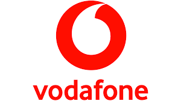

Хто я і звідки?
Мене звати Анастасія, маю вже 24 роки. Родом з міста Кропивницький але з 2019 року жила в Києві до початку повномасштабного вторгнення. Наразі проживаю в маленькому містечку в Бельгії але всеодно навідуюсь до улюбленого міста Київ приблизно раз на пів року.
Мій навчальний та робочий досвід
- Після школи вступила на англійську філологію в Кропивницькому, але залишила навчання через рік бо не подобалась система навчання. Вивчала далі англійську самостійно і досягла рівня B2.
- Переїхала в Київ, де працювала у магазині Vodafone. Подобалась ця робота тим що я працювала з технікою і був дружній колектив☺️. 
- Після початку війни я переїхала в Бельгію і працювала вже там. Спочатку в ресторані, зараз — хаускіпером.
Мої хоббі❤️
- Грати в ігри, особливо з контроллером, бо дитинство було з ps2
- VR індустрія в цілому, маю шолом (чи окуляри?) quest 2 від Meta як для початку
- Слідкувати за новинками технологій в цілому теж можна зазначити як хоббі
- Споживати контент англійскою мовою, в основному це наукові або психологічні подкасти
- Читаю я не так часто але теж буває затягує
- Писати код
- Люблю пити каву в нових місцях)
Чому я на цьому курсі і що далі?
Я вже маю досвід верстки але багато що забулось чи запам'яталось не правильно, тому прийшла на цей курс щоб фундаментально закріпити й вивчити все що потрібно для стоврення якійсного інтерфейсу. Крім цього паралельно вивчаю JavaScript та у майбутньому фреймворки. Моя ціль це стати Front-end розробницею та переїхати назад у Київ з новою професією